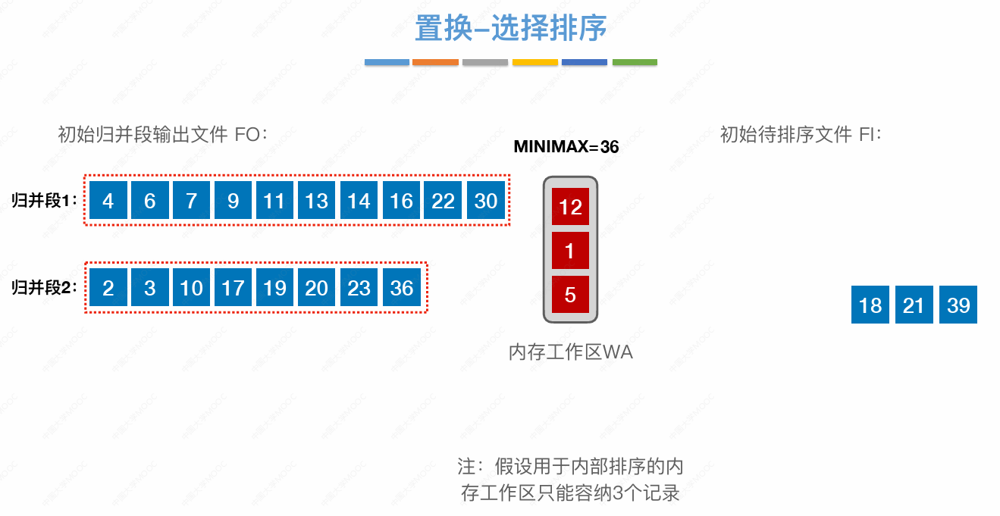
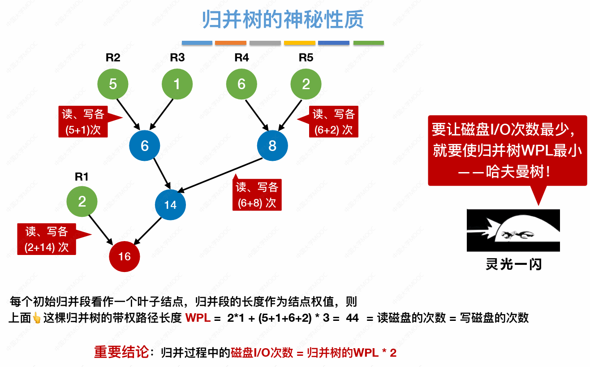
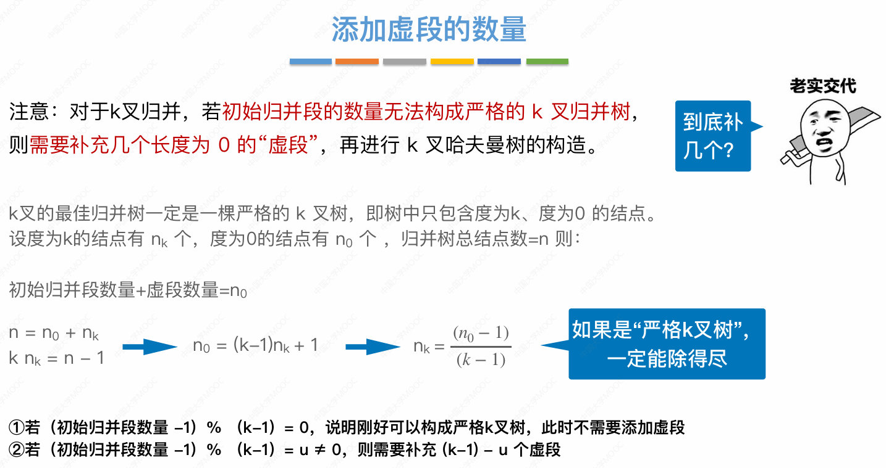

外部排序
外部排序
k 路归并排序
1 内存分配:
- k 个输入缓冲区，1 个输出缓冲区
2
- 硬盘有 N 个记录，内存工作区(每个段)容纳 L 个记录
- 硬盘每个归并段同样容纳 L 个记录，初始归并段的数量 $r = \left \lceil \frac{N}{L} \right \rceil $
- 对每个段的 L 个记录内部排序，组成有序的初始归并段
3 总共 趟 k 路归并
- k 个归并段读入 k 个输入缓冲区
- 归并排序从 k 个归并段选出最小记录暂存至缓冲区
- 缓冲区满时，写出外存
4 时间开销
- 读写外存时间 + 内部排序时间 + 内部归并时间
5 优化
增加归并路数 k
代价
- 增加相应输入缓冲区
- k 个归并段选最小值需要对比 k - 1 次关键字
减少初始归并段数量 r
败者(锦标赛)树
优化问题
k 个归并段选最小值需要对比 k - 1 次关键字
k 路归并的比较次数
- 初始归并段长度相同的 k 路归并排序中，每一趟 k 路归并的比较次数都是相同的
r 个归并段，每个段有 L 个记录，一趟 k 路归并，总的比较次数:
- 总记录数:
无优化
- k 个段头的 k 个记录选出最小需要 k - 1 次比较
- r * L 个记录需要选 次最小
- 总比较次数:
败者树优化
-
败者树比较次数
-
总比较次数:
置换-选择排序
(生成)初始归并段
优化问题
减少初始归并段数量 r
图示

最佳归并树
k 路归并排序的最优方案
磁盘 I/O 次数

k 叉哈夫曼树
补虚段
